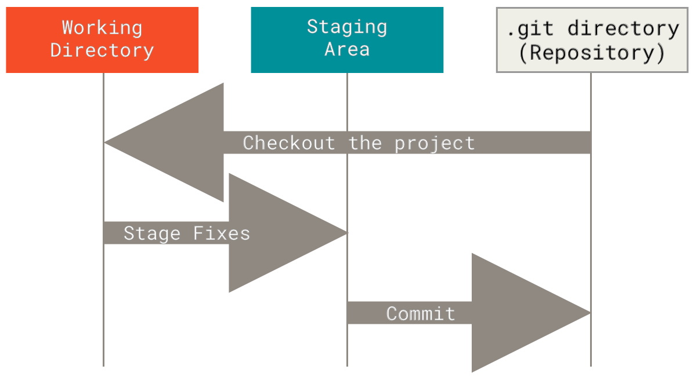

AN ATLAS OF CHANGEOne file.
One file.
Three places.
A working file, its staged version, and its last commit can all disagree. Explore the same note in each place.

A working file, its staged version, and its last commit can all disagree. Explore the same note in each place.
